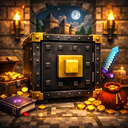

Minecraft Mod
🔐 Steelhold
Heavy-duty safes for Forge survival — owned storage, key access, and “anvil-style” falling behavior for secure builds and long-running worlds.
Owner + key system tied to a unique lock ID per safe.
Progress from Basic → Reinforced → Steelhold → Vault → Bank.
Safes fall like anvils and keep their data when they land.
Tune slots, hardness, blast resistance, and tool requirements.
📝 Description
What Steelhold isSteelhold is a Forge mod that adds player-owned safes with a practical lock-and-key workflow. Each safe is assigned a unique Lock ID and an Owner when placed. The owner can open it freely; everyone else needs a matching key item.
Steelhold is built for survival pacing and server longevity: safes can be tuned via config, support different tiers, and behave like real heavy objects — if you remove the block underneath, they fall like anvils.
🔒 Ownership + Key Access
Non-owners get a locked message (with the owner name) and need a key that matches the safe’s Lock ID.
Keys are regular items that store the safe’s unique ID in NBT. Their tooltip shows a short lock ID, the safe type name, and the coordinates they were created for — handy when you’re managing multiple vaults.
🧰 Built-In Commands (Key Management)
Steelhold includes a small set of server commands for safe management (you must be looking at the safe within 5 blocks):
/steelhold makekey → owner-only: creates a matching Safe Key item
/steelhold resetlock → owner-only: resets the safe’s Lock ID (old keys stop working)
/steelhold whoowns → shows the current owner of the safe
Use /steelhold resetlock if a key gets stolen or you’re transferring ownership rules on a server.
⬇️ Falling Safes (Anvil-Style Physics)
Safes are heavy: if the block under them disappears, they convert into a falling block entity (like anvils) and keep their stored data while falling/landing — including inventory, owner, and lock ID.
🏗️ Sizes & Structure
- Basic / Reinforced / Steelhold: single-block safes.
- Vault Safe: a 2-block-tall safe placed as a lower + upper half.
- Bank Safe: a 2×2×2 “mega safe” (8 blocks). Only the origin block stores the inventory and renders the model.
⚙️ Configurable Balance
Steelhold ships with a Forge common config that lets pack makers and servers tune: slot counts, hardness, blast resistance, and required pickaxe tier per safe tier. There are also global toggles for whether safes drop contents on break and whether explosions can destroy safes.
Slot settings apply to newly placed safes only. Existing safes keep their original size to prevent item loss.
⭐ Features
What Steelhold focuses on🔐 Lock System Core
A simple, explicit ownership + key approach that works well in survival and multiplayer.
- Owner can always open
- Non-owners require a matching key
- Owner name is shown on locked attempts
⚙️ Server Tuning Config
Balance the grind, security, and progression to match your pack or server rules.
- Slots / hardness / blast resistance per tier
- Required tool level per tier
- Explosion + drop-contents toggles
⬇️ Physical Behavior World
Safes fall like anvils and keep their data when they land.
- Inventory, owner, and lock ID persist through falling
- Vault Safe handles both halves cleanly
- Bank Safe keeps the structure consistent (single drop source)
🏗️ Tiered Progression Pacing
Start small and scale up to vault-level storage as your world advances.
- Basic → Reinforced → Steelhold
- Vault (2-tall) for high-capacity builds
- Bank (2×2×2) for endgame secure rooms
📘 How to Use
Quick gameplay guide1) Craft & Place
Place a safe like any block — it binds to the player who placed it.
- Owner is stored on the safe
- Each safe gets a unique Lock ID
- Vault places as a 2-block structure; Bank places as a 2×2×2 structure
2) Create Keys (Owner)
Look at your safe (within 5 blocks) and generate a key via command.
/steelhold makekeycreates a Safe Key item- Give keys to friends / teammates you trust
- Keys show a short Lock ID + coordinates in the tooltip
3) Reset a Lock (If Needed)
If a key leaks, reset the lock so old keys stop working.
/steelhold resetlockgenerates a new Lock ID- Old keys no longer match
- Create fresh keys for trusted players
4) Tune Your Server
Use the common config to match your server’s progression and difficulty.
- Set slots, hardness, blast resistance, and tool level per tier
- Decide whether contents drop on break
- Decide whether explosions can destroy safes
🧱 Crafting Recipes
Recipes & progression🔓 Basic Safe
Starter-tier safe crafted from iron and a chest.
Recipe:
[Iron Ingot] [Iron Ingot] [Iron Ingot]
[Iron Ingot] [Chest] [Iron Ingot]
[Iron Ingot] [Iron Ingot] [Iron Ingot]
🛠️ Reinforced Safe
Upgrade the Basic Safe with iron blocks + obsidian.
Recipe:
[Obsidian] [Iron Block] [Obsidian]
[Iron Block] [Basic Safe] [Iron Block]
[Obsidian] [Iron Block] [Obsidian]
⚙️ Steelhold Safe
High-security tier using netherite ingots and obsidian.
Recipe:
[Obsidian] [Netherite Ingot] [Obsidian]
[Netherite Ingot] [Reinforced Safe] [Netherite Ingot]
[Obsidian] [Netherite Ingot] [Obsidian]
🧱 Vault Safe (2-block tall)
Large safe tier crafted with netherite blocks + ingots.
Recipe:
[Netherite Block] [Netherite Ingot] [Netherite Block]
[Netherite Ingot] [Steelhold Safe] [Netherite Ingot]
[Netherite Block] [Netherite Ingot] [Netherite Block]
🏦 Bank Safe (2×2×2 mega safe)
Endgame safe built from netherite blocks, ender chests, and a nether star.
Recipe:
[Netherite Block] [Nether Star] [Netherite Block]
[Ender Chest] [Vault Safe] [Ender Chest]
[Netherite Block] [Nether Star] [Netherite Block]
🔑 Safe Key
Keys are created by the owner via command while looking at a safe.
Create keys:
1) Look at the safe (within 5 blocks)
2) Run: /steelhold makekey
🖼️ Media
Icon & screenshots


📥 Install
Quick notesKeep client + server mod versions in sync. Pin versions for packs and servers.
1) Install Forge (matching your mod version)
2) Drop Steelhold into /mods
3) Launch once to generate config
4) Restart after config changes